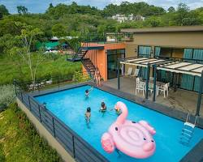

.jpg)
.jpg)
ข้อมูลทั่วไป
- อุทยานแห่งชาติในภาคใต้ มีภูเขา ป่าไม้ และทิวทัศน์ธรรมชาติ
- มีจุดชมวิวสูงและเส้นทางเดินป่าหลายระดับ
อยู่ที่ไหน / การเดินทาง
- ที่ตั้ง: อุทยานแห่งชาติเขาหลวง จังหวัดสุราษฎร์ธานี
- รถยนต์: จากตัวเมืองสุราษฎร์ฯ ใช้ทางหลวงเข้าสู่อุทยาน ติดตามป้ายทางขึ้น
- รถบัส/รถตู้: มีเส้นทางจากตัวเมืองไปอำเภอใกล้อุทยาน แล้วต่อรถท้องถิ่น
สิ่งที่ต้องทำ / ไฮไลต์
- เดินป่า / ปีนเขา
- ชมวิวมุมสูง / ทะเลหมอก (ถ้าอากาศเอื้อ)
- ถ่ายภาพธรรมชาติ / พืช / สัตว์
เวลาเปิด / ค่าเข้าชม / ข้อจำกัด
- เส้นทางเดินป่าบางช่วงอาจปิดในช่วงฝนหนัก — ตรวจสอบก่อนเดินทาง
- ต้องตรวจสอบการอนุญาตเข้า-ออก และเงื่อนไขความปลอดภัยของอุทยาน
เคล็ดลับ / คำแนะนำ
- ออกเดินทางเช้ามืดเพื่อตะลุยจุดสูงสุด และเผื่อเวลา
- เตรียมรองเท้าปีนเขา เสื้อผ้าอุ่น และไฟฉาย
- ตรวจสอบสภาพอากาศ/เส้นทาง และจัดเวลาให้ดี — บางเส้นทางใช้เวลานาน
ที่พักแนะนำ (4 ระดับ)
| ระดับ | ชื่อที่พัก / ตำแหน่ง | ราคา / ข้อดี |
|---|---|---|
| พรีเมียม |  รีสอร์ทรอบภูเขาหลวง รีสอร์ทรอบภูเขาหลวง | ~ 5,000–12,000 บาท/คืน — วิวภูเขา บริการครบ (ดู: โรงแรมภูเขาในสุราษฎร์ธานี) |
| กลาง |  โรงแรม 3–4 ดาว รอบอุทยาน โรงแรม 3–4 ดาว รอบอุทยาน | ~ 2,000–5,000 บาท/คืน — ใกล้ทางขึ้นเขา (ดูรายการที่พักสุราษฎร์ฯ/อุทยาน) |
| กลาง-ประหยัด |  เกสต์เฮาส์ / โรงแรมราคาปานกลาง เกสต์เฮาส์ / โรงแรมราคาปานกลาง | ~ 800–2,500 บาท/คืน — ราคาย่อมเยา (รายชื่อที่พักรอบอุทยาน) |
| โฮมสเตย์ | บ้านพักชุมชน / โฮมสเตย์ริมทาง | ~ 300–1,500 บาท/คืน — ใกล้ธรรมชาติ เรียบง่าย |